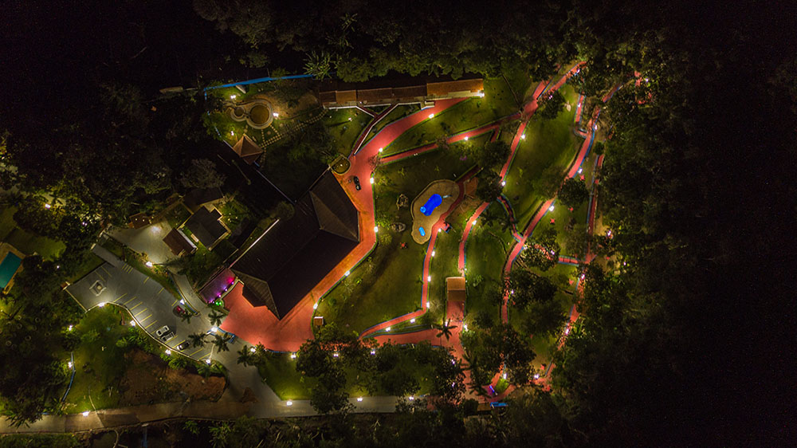
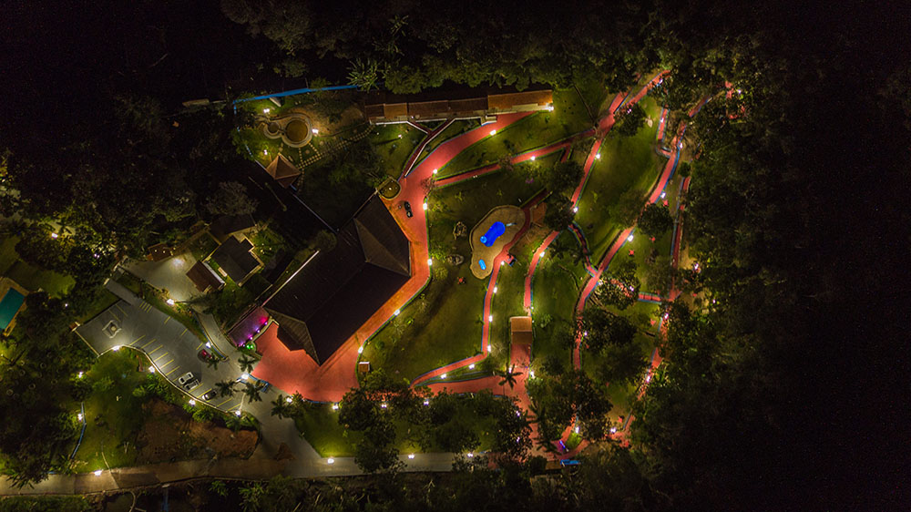

Confiança, Ciência e Empatia
Nossa equipe desenvolve um atendimento confiável e abrangente para o paciente e sua família.
⚕ Saiba mais sobre internaçãoO que oferecemos
Ambiente Seguro
📹 Monitoramento 24h
🔏 Privacidade absoluta
💂 Segurança garantida
Infraestrutura Completa
🏊 Piscina
🛌 Acomodações Confortáveis
📺 TV, Academia, Futebol e muito mais
Alimentação e Lazer
🍽 4 Refeições diárias
♟ Jogos e Atividades
🌳 Contato com a Natureza
Tratamentos Personalizados
Equipe Multidisciplinar
👨⚕ Psiquiatra
👩⚕ Psicóloga
👩⚕ Nutricionista
🏋 Fisioterapeuta
Abordagem Terapêutica
📖 12 Passos (A.A./N.A.)
🧘 Terapias integradas
🎭 Arteterapia e Espiritualidade
Plano de Tratamento
Individualizado e sigiloso
Atendimento familiar
Acompanhamento contínuo
Sobre Nós
Somos uma equipe dedicada e experiente na captação de pacientes para N.A., atuando com sensibilidade e compromisso tanto na captação voluntária quanto involuntária. Trabalhamos incansavelmente para oferecer acesso às melhores clínicas de tratamento em todo o Brasil, garantindo atendimento humanizado e suporte completo.
📅 Agende uma visitaEstrutura
Conheça um pouco mais da clínica mais avançada em reabilitação.
 

Tratamentos
TRANSTORNOS PSIQUIÁTRICOS
Nas doenças psiquiátricas, existe uma correlação entre gravidade da doença e funcionamento psicossocial...
TRANSTORNOS POR USO DE SUBSTÂNCIAS
O Transtorno por Uso de Substâncias (TUS) tem como característica a presença de sintomas...
Consulte seu Convênio
Fale Conosco
Estamos disponíveis 24 horas por dia para atender você e sua família.